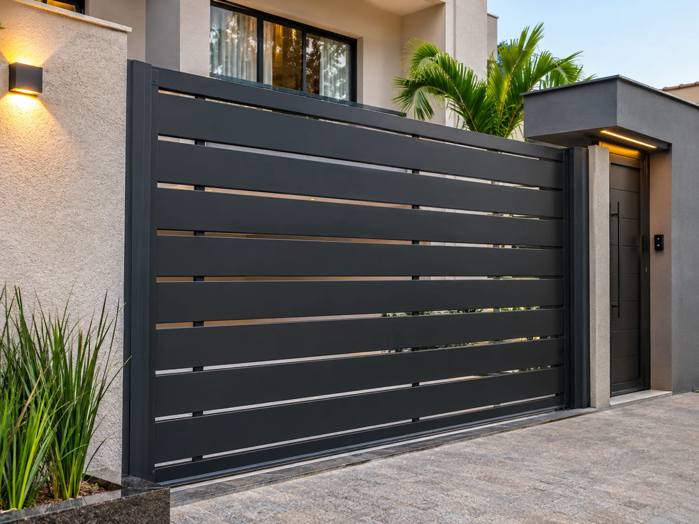
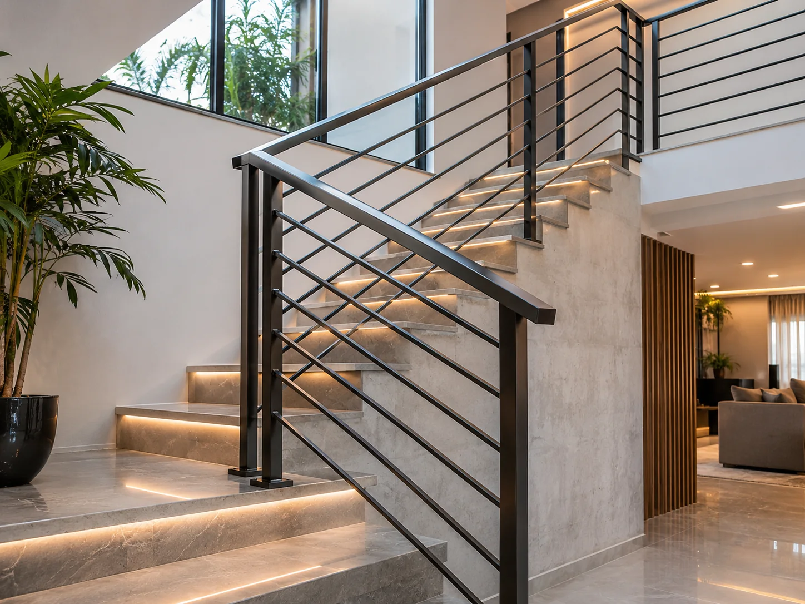
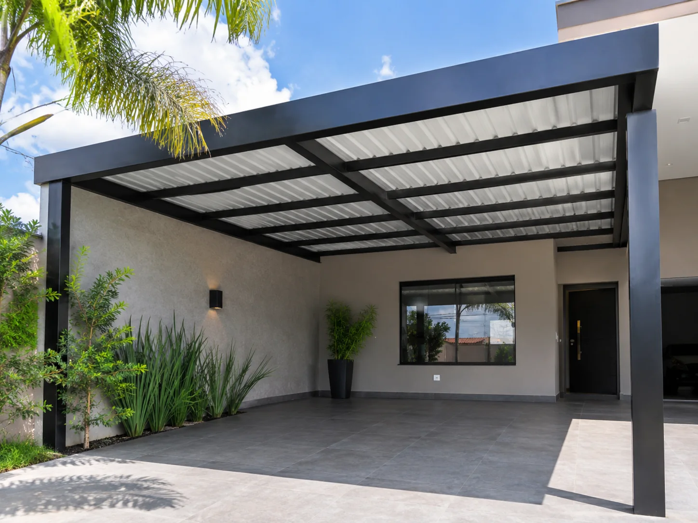
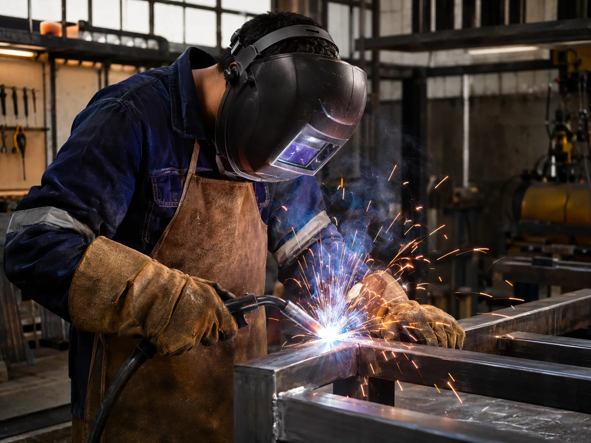

Portões e grades
Portões de correr, abrir e modelos personalizados para o seu espaço.
Solicitar orçamento ↗
SOLUÇÕES EM METAL SOB MEDIDA
Portões, grades, corrimãos, coberturas e estruturas metálicas com atenção a cada detalhe. Do primeiro desenho ao acabamento.
Mais que estruturas metálicas, criamos soluções para o seu espaço.
✳NOSSA ESPECIALIDADE
Trabalhos sob medida para residências, comércios e outros ambientes. Conheça algumas das soluções que podem fazer parte do seu projeto.
Portões de correr, abrir e modelos personalizados para o seu espaço.
Solicitar orçamento ↗Estruturas funcionais com visual moderno para escadas e varandas.
Solicitar orçamento ↗Metalon, coberturas, suportes e soluções metálicas sob medida.
Solicitar orçamento ↗Serviços de soldagem, ajustes, recuperação e reforço de peças metálicas.
Solicitar orçamento ↗GALERIA DE INSPIRAÇÃO
Exemplos visuais dos tipos de serviço. As imagens são ilustrativas e poderão ser substituídas por fotos de trabalhos realizados pela Shell Serralheria.



COMPROMISSO COM CADA ETAPA ✳SOBRE A SHELL SERRALHERIA
A Shell Serralheria apresenta soluções em serviços metálicos, valorizando o planejamento, a funcionalidade e o acabamento. Cada projeto começa com uma conversa sobre o que você precisa.
VAMOS TIRAR SEU PROJETO DO PAPEL?
Preencha os dados. Ao clicar no botão, abriremos o WhatsApp com a mensagem do orçamento pronta para enviar.